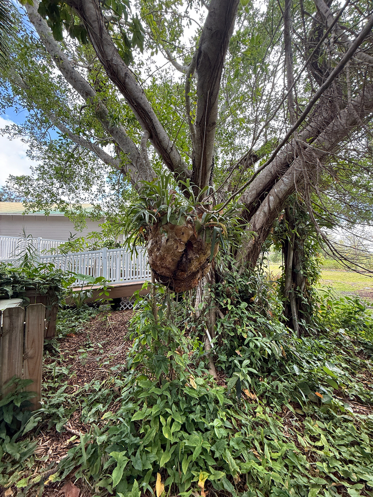

Non-native. Native to coastal Queensland and New South Wales, Australia, Bali, Java, and New Guinea. Among the most cold-tolerant staghorn ferns — survives brief temperatures down to 30°F. Member of Polypodiaceae.
Staghorn ferns produce no flowers and no nectar, so bees, butterflies, and hummingbirds have no particular reason to visit.
The wildlife role here is structural. The shield fronds collect water and organic debris, and the dense frond mass creates sheltered microhabitats used by insects, small lizards, and invertebrates for cover and foraging.
A colony this size functions as a small, self-contained habitat unit attached to a tree.
Reproduction and Identification
Spores — No flowers, fruit, or seeds. Reproduction by microscopic spores released from sori: fuzzy, felt-like brown patches that form on the undersides of fertile frond tips.
Vegetative spread — The colony expands by producing small offset plants at the edges of the shield fronds. These can be detached and mounted on a new surface.
Shield fronds — Round, flat, papery, brown. Clasp the host surface, protect the root mass, trap organic debris. Do not photosynthesize.
Fertile fronds — Arching, grey-green, deeply forked. The antler-shaped fronds visible from a distance. Carry the sori.
Brown fertile fronds — Not dead. Covered in spores on undersides. Leave them.
The forked antler fronds are the obvious first feature. Look deeper into the base for the flat overlapping brown shield fronds gripping the palm trunk. Turn a fertile frond tip over to check for sori.
Not on the FISC invasive plant list. UF/IFAS flags the genus with a caution recommendation — spores wind-dispersed; species has naturalized on urban trees in South Florida. Monitor nearby palms for volunteer plants.
Edible. Not edible.